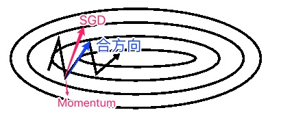

梯度下降法是最流行的优化算法之一，也是迄今为止最常用的优化神经网络的方法。同时，每一个最先进的深度学习库都包含了多种优化梯度下降法的实现(如Lasagne、Caffe、Keras)。
梯度是使目标函数增大的方向，梯度下降法就是沿着梯度的反方向去更新参数，使目标函数越来越小。
$$\theta_{t+1} = \theta_t - \eta \nabla_\theta J(\theta)$$
其中，梯度是决定目标函数改变的方向，$\eta$决定了每次更新的步长。
梯度下降法的三个变种
Batch gradient descent（批量梯度下降法）
批量梯度下降法每次计算梯度时，都是使用整个训练集的所有样本。
$$\theta_{t+1} = \theta_t - \eta \nabla_\theta J(\theta)$$
批量梯度下降法每更新一次参数，都需要对所有样本进行一次梯度的计算，所以它比较慢。而且当数据量很大时，对内存的要求也比较高。
也不支持在线更新模型。
Python代码：1
2
3for i in range(nb_epochs):
params_grad = evaluate_gradient(loss_function, data, params)
params = params - learning_rate * params_grad
Stochastic gradient descent（随机梯度下降法）
批量梯度下降法(SGD)每次计算梯度时，都只使用其中一个训练样本。
$$\theta_{t+1} = \theta_t - \eta \nabla_\theta J(\theta; x^{(i)}; y^{(i)})$$
SGD比批量梯度下降法更快，也能用于在线学习。
但是SGD的参数更新太频繁，会导致参数更新时产生较大的方差（参数波动大），从而会使目标函数产生剧烈的波动，如下图。
当批量梯度下降法收敛到局部最小值时，SGD的波动效应，一方面能使参数跳跃到新的或潜在更好的局部最小值；另一方面，这最终会使参数收敛到正确的最小值。然而，已经表明，当我们慢慢地降低学习率时，SGD显示出与批梯度下降相同的收敛行为，几乎可以肯定地收敛到非凸和凸优化的局部或全局最小值。
Python代码：1
2
3
4
5for i in range(nb_epochs):
np.random.shuffle(data)
for example in data:
params_grad = evaluate_gradient(loss_function, example, params)
params = params - learning_rate * params_grad
Mini-batch gradient descent（小批量梯度下降法）
小批量梯度下降法是兼顾了批量梯度下降法和SGD，每次更新参数时，使用一小批n个样本来计算梯度。
$$\theta_{t+1} = \theta_t - \eta \nabla_\theta J(\theta; x^{(i:i+n)}; y^{(i:i+n)})$$
优点：
- 降低了参数更新的方差，会使收敛更加稳定；
- 小批量数据可以使用矩阵操作来进行优化计算效率。
一般批量的大小选择50-256之间，根据训练集的大小而定。
Python代码：1
2
3
4
5for i in range(nb_epochs):
np.random.shuffle(data)
for batch in get_batches(data, batch_size=50):
params_grad = evaluate_gradient(loss_function, batch, params)
params = params - learning_rate * params_grad
存在的问题
小批量梯度下降法不能保证良好的收敛性，在实际使用过程中，面临如下挑战：
- 如何选择合适的学习率？
- 如何对不同的参数应用不同的学习率？因为，当数据稀疏并且特征具有不同的频次时，我们可能不希望将对所有的参数执行相同程度的更新，而是对于很少出现的特征，进行大幅地更新。
- 如何解决局部最小值和鞍点的问题？Dauphin等人 [19]认为，事实上问题往往并不是由局部最小值产生，而是由于鞍点导致的。
梯度下降优化算法
Momentum（动量）
SGD在遇到『峡谷』的时候，会表现出在峡谷斜坡上反复摇摆的情况。如下图：
加上『动量』之后，有助于抑制这种振荡。
$$v_t = \gamma v_{t-1} + \eta \nabla_\theta J(\theta) $$
$$\theta = \theta - v_t$$
其中，$\gamma$一般取0.9
根据『平行四边形法则』，加上『动量』后的方向，如下图：

『动量』有一个很好的特性：对于梯度方向不变的维度，动量一直增加；对于梯度方向改变的维度，动量减少，参数更新的幅度也小。
因此，『动量』能加速收敛，减少振荡。
除此之外，当遇到局部最小值时，如果『动量』足够大，也能越过这个局部最小值点。
Nesterov accelerated gradient（NAG，Nesterov 加速梯度）
然而，如果一个滚下山坡的球，盲目地关注于沿着动量方向滚下去的话，而轻视了它『将去的地方』的话，就会对收敛速度产生影响。
比如说，当它再次遇到上升的山坡的时候，会冲上山坡，而不是减速。
Momentum与NAG的区别：
- 基于动量的方法，在计算算当前的速度方向时，是用上一次的动量+『当前点』的梯度方向。
- 而NAG在计算当前的速度方向时，是用上一次的动量+『更新后的点』的梯度方向。
- 为什么NAG用『更新后的点』的梯度方向？因为『更新后的点』比『当前点』更指向极小值点。（也就是下图中『lookahead』的效果）
- 『更新后的点』的梯度方向未知，所以通过 $\nabla_\theta J(\theta - \gamma v_{t-1})$ 来近似计算。

上图中，右侧 NAG 的红色箭头比左侧 Momentum 的红色箭头的方向更加指向极小值点。
公式如下：
$$v_t = \gamma v_{t-1} + \eta \nabla_\theta J(\theta - \gamma v_{t-1}) $$
$$\theta = \theta - v_t$$
Adagrad
- Adagrad对不同维度的参数，使用不同的学习率。
- Adagrad对频率高的特征进行小的更新，对频率低的特征进行大的更新。
Dean(Dean, J., Corrado, G. S., Monga, R., Chen, K., Devin, M., Le, Q. V, … Ng, A. Y. (2012). Large Scale Distributed Deep Networks. NIPS 2012: Neural Information Processing Systems, 1–11. )等人发现，Adagrad 极大地提高了 SGD 的鲁棒性，并用它在谷歌(Google)训练大规模神经网络，这些网络学会了在 Youtube 视频中识别猫。 此外，Pennington 等人使用 Adagrad 来训练GloVe word embeddings，因为不频繁的出现的单词需要比常用词获得更大的更新。
我们用 $g_{t,i}$ 表示：第 $t$ 次迭代时，目标函数对参数的第 $i$ 维的偏导。
$$ g_{t,i} = \nabla_\theta J(\theta_{t,i}) $$
SGD，每一维参数分别更新的话，公式如下：
$$ \theta_{t+1,i} = \theta_{t,i} - \eta \cdot g_{t,i}$$Adagrad，步长是基于『过去所有的梯度』计算的，每一维的步长都不一样：
$$ \theta_{t+1,i} = \theta_{t,i} - \frac \eta {\sqrt{G_{t, ii} + \epsilon}} \cdot g_{t,i}$$
其中，$G_{t}$ 是对角矩阵，每个元素 $G_{t,ii}$ 都是『过去所有梯度的平方和』。 $\epsilon$ 是个拉普拉斯平滑常数。这里的平方根运算很重要，如果没有的话，算法的表现会很糟糕。
Adagrad的公式如下：
$$ v_t = v_{t-1} + \text{diag}(g_t^2) $$
$$ \Delta{\theta_t} = -\frac{\eta}{\sqrt{v_t+\epsilon}} * g_t $$
$$ \theta_{i+1}= \theta_t - \frac{\eta}{\sqrt{v_t+\epsilon}}*g_t $$
特点：
- 前期$g_t$较小的时候，regularizer较大，能够放大梯度，加速向极小值点逼近
- 后期$g_t$较大的时候，regularizer较小，能够约束梯度，在极小值点附近减速
- 适合处理稀疏梯度。因为它对每一维参数的更新的步长都不一样。对频率高的特征进行小的更新，对频率低的特征进行大的更新。
缺点：
- 由公式可以看出，仍依赖于人工设置一个全局学习率
- $\eta$设置过大的话，会使regularizer过于敏感，对梯度的调节太大
- 中后期，分母上梯度平方的累加将会越来越大，使$gradient\to0$，使得训练提前结束
RMSProp
在 Adagrad 中， $v_t$ 是单调递增的，使得学习率逐渐递减至 0，可能导致训练过程提前结束。为了改进这一缺点，可以考虑在计算二阶动量时不累积全部历史梯度，而只关注最近某一时间窗口(长度为w)内的梯度。
名称理解：
RMS，Root Mean Squared，均方根。
Prop, Proportion，比例
RMSProp，也就是在均方根的基础上，加了一个比例，起到只考虑最近一段时间窗口(w步)内的梯度的作用。但是它不直接存储w步内的梯度，而是使用一个proportion对其进行近似计算。
$$ v_t = \gamma v_{t-1} + (1-\gamma) \cdot \text{diag}(g_t^2) $$
$$ \theta_{i+1}= \theta_t -\frac{\eta}{\sqrt{v_t+\epsilon}}*g_t $$
Hinton建议，$\gamma$ = 0.9, $\eta$ = 0.001
优点：
- RMSprop算是Adagrad的一种发展，和Adadelta的变体，效果趋于二者之间
- 适合处理非平稳目标 - 对于RNN效果很好
缺点：
- 依然依赖于人工设置的全局学习率
Adadelta
针对梯度平方和累计越来越大的问题，解决方法与RMSProp一致，在此基础上，Adadelta做了一些摆脱超参 $\eta$ 的工作。
最初的方案依然是对学习率进行自适应约束：
$$ v_t=\nu v_{t-1}+(1-\nu) \cdot \text{diag}(g_t^2) $$
$$ \Delta{\theta_t} = -\frac{\eta}{\sqrt{v_t+\epsilon}}*g_t $$
在此处Adadelta其实还是依赖于全局学习率的，但是作者做了一定处理，经过近似牛顿迭代法之后：
$$ E|g^2|_t = \rho \cdot E|g^2| _ {t-1} + (1-\rho) \cdot \text{diag}(g_t^2)$$
$$ \Delta{x_t}=-\frac{\sqrt{\sum_{r=1}^{t-1}\Delta{x_r}}}{\sqrt{E|g^2|_t+\epsilon}} $$
其中，E代表求期望。
此时，可以看出Adadelta已经不用依赖于全局学习率了。
特点：
- 训练初中期，加速效果不错，很快
- 训练后期，反复在局部最小值附近抖动
Adam
Adam(Adaptive Moment Estimation)可以认为是 RMSprop 和 Momentum 的结合。和 RMSprop 对二阶动量使用指数移动平均类似，Adam 中对一阶动量也是用指数移动平均计算，它利用梯度的一阶矩估计和二阶矩估计动态调整每个参数的学习率。Adam的优点主要在于经过偏置校正后，每一次迭代学习率都有个确定范围，使得参数比较平稳。公式如下：
$$ m_t=\mu m_{t-1}+(1-\mu) g_t $$
$$ v_t=\nu*v_{t-1}+(1-\nu) \cdot \text{diag}(g_t^2) $$
其中，初值
$$ m_0 = 0 $$
$$ v_0 = 0 $$
注意到，在迭代初始阶段，$m_t$ 和 $v_t$ 有一个向初值的偏移（过多的偏向了 0）。因此，可以对一阶和二阶动量做偏置校正 (bias correction)，
$$ \hat{m_t}=\frac{m_t}{1-\mu^t} $$
$$ \hat{v_t}=\frac{v_t}{1-\nu^t} $$
$$ \Delta{\theta_t}=-\frac{\hat{m_t}}{\sqrt{\hat{v_t}}+\epsilon}*\eta $$
其中，$m_t$，$v_t$分别是对梯度的一阶矩估计和二阶矩估计，可以看作对期望$E|g_t|$，$E|g_t^2|$的估计；$\hat{m_t}$，$\hat{v_t}$是对$m_t$，$v_t$的校正，这样可以近似为对期望的无偏估计。 可以看出，直接对梯度的矩估计对内存没有额外的要求，而且可以根据梯度进行动态调整，而$-\frac{\hat{m_t}}{\sqrt{\hat{v_t}}+\epsilon}$对学习率形成一个动态约束，而且有明确的范围。
特点：
- 结合了Adagrad善于处理稀疏梯度和RMSprop善于处理非平稳目标的优点
- 对内存需求较小
- 为不同的参数计算不同的自适应学习率
- 也适用于大多非凸优化 - 适用于大数据集和高维空间
经验之谈
- 对于稀疏数据，尽量使用学习率可自适应的优化方法，不用手动调节，而且最好采用默认值
- SGD通常训练时间更长，但是在好的初始化和学习率调度方案的情况下，结果更可靠
- 如果在意更快的收敛，并且需要训练较深较复杂的网络时，推荐使用学习率自适应的优化方法。
- Adadelta，RMSprop，Adam是比较相近的算法，在相似的情况下表现差不多。
- 在想使用带动量的RMSprop，或者Adam的地方，大多可以使用Nadam取得更好的效果
可视化对比
收敛速度
- 收敛速度依次是：Adadelta > Adagrad > RMSProp >> NAG > Momentum >SGD
- Adagrad、Adadelta 和 RMSprop 几乎立即朝着正确的方向飞去，并且收敛的很快，而 Momentum 和 NAG 则偏离了轨道，就像一个惯性很大的球滚下山坡的情景。 然而，NAG 很快就能够改变它的路线，因为它通过向前看、向最小的方向看增强了它的反应能力。

鞍点
- SGD、Momentum和NAG比较难逃脱鞍点
- SGD困在了鞍点
- Adagrad、RMSProp、Adadelta很快就避开了鞍点

结论
- 『Mini-batch gradient descent』：小批量梯度下降法无法解决自适应学习率的问题；
- 『Momentum』：基于物理上的惯性，每一步的梯度等于上一次的运动方向+本次的梯度；
- 『Nesterov加速梯度』：在『Momentum』的基础上，用『估测的下一步梯度方向』替换掉『本次的梯度方向』，起到了加速的作用；
- 『Adagrad』：在计算步长时，使用『过去所有梯度的平方和』，是每一维的步长都不一样，达到对稀疏的特征进行大幅的更新，对稠密的特征进行小幅的更新的效果；
- 『RMSProp』：摒弃『过去所有梯度』，使用一段时间窗内的梯度，解决Adagrad梯度趋近于0的问题；
- 『Adam』：不依赖于人工定义的全局步长，是首选的方法。
参考文献
1. http://ruder.io/optimizing-gradient-descent
2. https://blog.csdn.net/google19890102/article/details/69942970
3. https://zhuanlan.zhihu.com/p/22252270